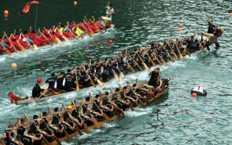

Suri Xie
 Guangdong has a variety of festivals and holidays, although many are ignored by the authorities, are still celebrated by few. The Renri festival is one among them and it is celebrated on the seventh day of the first lunar month. It is also referred to as “People’s day”, “People’s Victory Festival”, the “Seven Yuan Festival” and more. It is said that in the myth, Nuwa created chickens on the first day on the lunar month, then from the second to the sixth day she added dogs, pigs, sheep, ox, horses; finally, on the seventh day, she created humans. .Renri refers to the day that human beings were created by the goddess Nuwa, who is mentioned within the Chinese mythology, and it is the birthday of everyone.
Guangdong has a variety of festivals and holidays, although many are ignored by the authorities, are still celebrated by few. The Renri festival is one among them and it is celebrated on the seventh day of the first lunar month. It is also referred to as “People’s day”, “People’s Victory Festival”, the “Seven Yuan Festival” and more. It is said that in the myth, Nuwa created chickens on the first day on the lunar month, then from the second to the sixth day she added dogs, pigs, sheep, ox, horses; finally, on the seventh day, she created humans. .Renri refers to the day that human beings were created by the goddess Nuwa, who is mentioned within the Chinese mythology, and it is the birthday of everyone.
 The festival exists for a long period of time, it have been recorded since Jin dynasty. To Guangzhou people, the importance of this festival is not any smaller than that of New Year's Eve and the New Year. “According to ancient customs, for breakfast that day, seven kinds of vegetables (celery, mustard, spinach, shallots, garlic, etc.) are made of "Qibao Geng" and "Dongtian Bing" (fried in the open air).”. People also cut human shapes with colorful silk fabrics, or carved human shapes with gold leaf, and hung them on screens or tents. Women wear small carved figures on their temples, which is both auspicious and a decoration. The so-called Qi Cai Geng is a soup made up of seven sorts of vegetables. People expect a good harvest in the coming year. Nowadays, people eat Qibao soup, five of which are generally fixed: “celery ("qin", referring to diligence), garlic (homonym "calculation", referring to careful calculation), green onion (homonym of "smart", referring to smart ), cilantro (coriander, "coriander" homonym, "fate", refers to fate), leeks ("leeks" homonym, "jiu", refers to long for a long time), ettuce (homonym "generate wealth", also refers to life and vitality),”
The festival exists for a long period of time, it have been recorded since Jin dynasty. To Guangzhou people, the importance of this festival is not any smaller than that of New Year's Eve and the New Year. “According to ancient customs, for breakfast that day, seven kinds of vegetables (celery, mustard, spinach, shallots, garlic, etc.) are made of "Qibao Geng" and "Dongtian Bing" (fried in the open air).”. People also cut human shapes with colorful silk fabrics, or carved human shapes with gold leaf, and hung them on screens or tents. Women wear small carved figures on their temples, which is both auspicious and a decoration. The so-called Qi Cai Geng is a soup made up of seven sorts of vegetables. People expect a good harvest in the coming year. Nowadays, people eat Qibao soup, five of which are generally fixed: “celery ("qin", referring to diligence), garlic (homonym "calculation", referring to careful calculation), green onion (homonym of "smart", referring to smart ), cilantro (coriander, "coriander" homonym, "fate", refers to fate), leeks ("leeks" homonym, "jiu", refers to long for a long time), ettuce (homonym "generate wealth", also refers to life and vitality),”
(BaiDu N.D.). the other two Species are consistent with local customs and habits In some places, fish and meat are used instead, fish means "surplus every year", eating meat means "great wealth", and even some places use fruits and vegetables instead. Experienced elderly people also will put these seven dishes together and fry them together-they will have everything after frying them! The local custom are different, the fruits and vegetable used are different, and therefore the intentions are also different. Hakka people use celery, garlic, green onions, coriander, leeks and fish, meat, etc.; Taiwan and Fujian use spinach, celery, green onions and garlic, leeks, mustard greens, shepherd's purse, cabbage, and more. Chinese also practice the tradition climbing mountains or hiking and composing poems on this day, which is formed in Ancient China. Most Chinese believe that if Renri lands on a sunny day, it will bring the fortune of a flouring population, good luck and peace in the new year. For a lady to give birth on today was considered a excellent and blessed event. Nowadays, some Chinese people still celebrate the festival as a part of Chinese New Year, mainly by making a “soup of seven treasures” with seven fresh seasonal vegetables like leek, leaf mustard, and celery. Some people also climb mountains during the festival to enhance their health. This is one of the GuangDong festivals that contains unforgettable culture traditions and significant to the Chinese — Renri festival
Zepline Wang
 Guangdong has multiple of festivals and holidays, for example :
Sweeping Festival, Dragon Boat Festival, and Double Nine Festival. However, this essay is about a very unique festival that a lot of people in the world does not even know. It is named
“Niu Wang Dan”. Niu Wang Dan is not religious, but it is sacrificial. It is related to agricultural
tradition and it is not nomadic. In the lunar calendar, the eighth day of the forth month is the
Niu Wand Dan festival. The Zhuang people usually celebrates this. The Zhuang people will put
tree branches or maple tree branches in front of the cows door. Then, they will check the colors
of their cows fur and they will make foods that has same color with the to feed them. They
usually make glutinous rice to feed them. The Zhuang people will worship them in front of the
cattle column using something like paper money and joss stick and candle. They pray for tillage
of robust reproduction. If a family has a weak child, the parents will make the kid wear palm-
bark rain cape and take a bowl of rice to go into the cattle column and eat will the cattle. It says
that afterward, the kid will have the strength like a cow(rili N.D).
Guangdong has multiple of festivals and holidays, for example :
Sweeping Festival, Dragon Boat Festival, and Double Nine Festival. However, this essay is about a very unique festival that a lot of people in the world does not even know. It is named
“Niu Wang Dan”. Niu Wang Dan is not religious, but it is sacrificial. It is related to agricultural
tradition and it is not nomadic. In the lunar calendar, the eighth day of the forth month is the
Niu Wand Dan festival. The Zhuang people usually celebrates this. The Zhuang people will put
tree branches or maple tree branches in front of the cows door. Then, they will check the colors
of their cows fur and they will make foods that has same color with the to feed them. They
usually make glutinous rice to feed them. The Zhuang people will worship them in front of the
cattle column using something like paper money and joss stick and candle. They pray for tillage
of robust reproduction. If a family has a weak child, the parents will make the kid wear palm-
bark rain cape and take a bowl of rice to go into the cattle column and eat will the cattle. It says
that afterward, the kid will have the strength like a cow(rili N.D).
One of the most famous legend for the Niu Wang Dan is that the ancestor of the Zhuang’s are hunting for food and they caught a wild ox. The ox was domesticated and became a pet. On April 8, the ox give a birth to a bull. After being domesticated, the bull can plow the field. Afterwards, the ox reproduce and have a group of ox now. The numerous herds gradually replaced the labors of pulling the plow by hand. The Zhuang people engraves in their mind of the contribution that the bull give, so they give it a title, “the first ancestor of farm cattle’s.” Another legend of the Niu Wang Dan is about the beginning of Pangu’s opening of the heaven and earth. A person planted a silk melon seed, and the person carefully raise up the plant. In a few days, it grew so fast, it grew from the man’s world all the way to the heaven. People there often climb up the vines and play up there in the heaven. The Jade Emperor noticed this and got in great anger. He claims that “ we will cut down this silk melon seedlings.” Afterward, The Jade Emperor moved the palace to the land of nowhere. The Jade Emperor command Cattle Wang to spread the grass seed. It cause the man’s world get in chaos, the weeds are growing everywhere and humans cant survive. People are suffering of the cold and hunger. Cattle Wang feels very guilty and on the eighth day of April, he came down with the plow and he starts plowing. He only eats the weeds and is trying to lead the humans to a better life. The Jade Emperor soon notice it and condemned Cattle Wang and made him have a miserable life of eating weeds and plowing everyday. He could never go back to the heaven and can only live in the man’s world forever. To participate Cattle Wang, they celebrate him every year of this day.(rili N.D) Even though, there is such a little people notice this festival and attends this, it is still extremely famous and the Zhuang’s people from countryside will still believe this. They believe that it is the ox that saved them and bring them foods. During the Niu Wang Dan Festival, the Zhuang people will wear their best cloths and play music in the whole village. They will welcome the people who comes and they are all very enthusiastic. They will feed their cows very well and worship them. Only Guangdong still have some places and villages have Niu Wang Dan. It is super rare that you can see other places have people that attends the festival of Niu Wang Dan.
Philip Yang
The Dragon Boat Festival is one of the most famous festival of China. It originated in Guangdong and become a popular international sport which people are usually making competitions on it. Chinese people celebrate the festivity by doing interesting activities such as making and eating zongzi, drinking realgar wine, hanging Zhong Kui at home, wearing a Xiang Bao with you all day, and racing dragon boat (Munk 2021). Dragon Boat Festival is a giant candy box with all kinds of different flavor that people love.
 There are many interesting stories about the origin of Dragon Boat Festival, but the most well known story is the story of Qu Yuan. Qu Yuan a loyal minister of the Kingdom Chu, and he is also one of the Chinese earliest poets. Kingdom Chu is one of the seven warlord that was located at the southern part of China during the Warring State Period which is around the third century BCE. Qu Yuan gave many helpful suggestion to the plan of fighting against Qin, but Chu still lost their first war. Qu Yuan was opposed by aristocrats headed by Zi Lan, and Zi Lan was telling the King Huai that Qu Yuan is the person who leads to the failure of the war. Under the word of Zi Lan, King Huai deposed and exiled Qu Yuan from the government. Qu Yuan was in the toughest period of his life, so he wrote a lot of poems such as Li Sao (The Lament), Tian Wen (Heavenly Questions), and Jim Ge (Nine Songs) to express his feeling. Without Qu Yuan's help, Chu’s army became a disaster, so they lose the war even faster. In 278 BCE, Qu Yuan heard the terrified news that Chu’s capital was conquered by the Qin troops, and he is in a huge depression. Experiencing the disaster in Chu, he decided to plunge himself into the Miluo River on 5th day of the 5th lunar month, and he eventually get drown. The people of Chu have heard the death of Qu Yuan, and they were all depressed by the cruel fact. Fishermen sailed their boats and try to find the corpse of Qu Yuan, but they did not found his body. They found a lot of evil sea animals. They decided to protect Qu Yuan’s corpse from getting into the mouth of the evil animals. People threw Zongzi and eggs into the water, hoping to scare the evil fishes or shrimps to attack his body. An old doctor poured reagular wine which were used to make the fished drunk (Traditional Chinese Festivals). They also paddled their boats to scare the evil fishes, and this tradition had slowly developed into the competition of Dragon Boat (Dragon Boat Festival...). They had practiced all of these rituals every year for Qu Yuan. 5th day on 5th lunar month which they practice these rituals had became an official holiday of the world.
Even though the Dragon Boat Festival did not appeared in Guangdong, but it was spread to Guangdong in a short period of time because the Chu Kingdom is the closest warlord to Guangdong. The way of the celebration changed a lot as it was spreading to Guangdong. The changes were so huge that even small cities in Guangdong places such as: Foshan, Panyu, Hakka, and Chaoshan have their own ways to celebrate the festival. Foshan pays more attention to dragon boat competitions, so it has opened up its own way in the competition. Their competition involves dozens of dragon boats which obtain better visual arts. People in Panyu are more familiar in producing rice dumpling (zongzi), but they also take charge of dragon boat racing. People who were watching the competition in Panyu are allow
to make loud noises by hitting the drums and gongs for their favorable teams. This tradition had formed because people belief it is an another way to scare the evil spirits away rather than participating in the game. This idea of dragon boat racing also passes to other places in the world. After talking about the sub celebration of Panyu, we will turn our focus to the most popular way of celebration of Panyu which is making rice dumplings (zongzi). When people are making zongzi, people pour the lye water (aqueous sodium hydroxide), or potassium carbonate to the rice which gives the zongzi yellow appearance. The zongzi made by Panyu people are name alkaline rice. Alkaline rice dumpling is either made of only rice or is fill with sweet mixtures that give it a sweet taste. In Hakka, people rarely have dragon boat competition, but they make rice dumplings and developed different types of wine. The zongzi made by Hakka people is fill with pork that makes it tastes salty. People belief the salty zongzi can preserved for longer time, so people can save it for a whole year (Vitality Guangdong).
There are many interesting stories about the origin of Dragon Boat Festival, but the most well known story is the story of Qu Yuan. Qu Yuan a loyal minister of the Kingdom Chu, and he is also one of the Chinese earliest poets. Kingdom Chu is one of the seven warlord that was located at the southern part of China during the Warring State Period which is around the third century BCE. Qu Yuan gave many helpful suggestion to the plan of fighting against Qin, but Chu still lost their first war. Qu Yuan was opposed by aristocrats headed by Zi Lan, and Zi Lan was telling the King Huai that Qu Yuan is the person who leads to the failure of the war. Under the word of Zi Lan, King Huai deposed and exiled Qu Yuan from the government. Qu Yuan was in the toughest period of his life, so he wrote a lot of poems such as Li Sao (The Lament), Tian Wen (Heavenly Questions), and Jim Ge (Nine Songs) to express his feeling. Without Qu Yuan's help, Chu’s army became a disaster, so they lose the war even faster. In 278 BCE, Qu Yuan heard the terrified news that Chu’s capital was conquered by the Qin troops, and he is in a huge depression. Experiencing the disaster in Chu, he decided to plunge himself into the Miluo River on 5th day of the 5th lunar month, and he eventually get drown. The people of Chu have heard the death of Qu Yuan, and they were all depressed by the cruel fact. Fishermen sailed their boats and try to find the corpse of Qu Yuan, but they did not found his body. They found a lot of evil sea animals. They decided to protect Qu Yuan’s corpse from getting into the mouth of the evil animals. People threw Zongzi and eggs into the water, hoping to scare the evil fishes or shrimps to attack his body. An old doctor poured reagular wine which were used to make the fished drunk (Traditional Chinese Festivals). They also paddled their boats to scare the evil fishes, and this tradition had slowly developed into the competition of Dragon Boat (Dragon Boat Festival...). They had practiced all of these rituals every year for Qu Yuan. 5th day on 5th lunar month which they practice these rituals had became an official holiday of the world.
Even though the Dragon Boat Festival did not appeared in Guangdong, but it was spread to Guangdong in a short period of time because the Chu Kingdom is the closest warlord to Guangdong. The way of the celebration changed a lot as it was spreading to Guangdong. The changes were so huge that even small cities in Guangdong places such as: Foshan, Panyu, Hakka, and Chaoshan have their own ways to celebrate the festival. Foshan pays more attention to dragon boat competitions, so it has opened up its own way in the competition. Their competition involves dozens of dragon boats which obtain better visual arts. People in Panyu are more familiar in producing rice dumpling (zongzi), but they also take charge of dragon boat racing. People who were watching the competition in Panyu are allow
to make loud noises by hitting the drums and gongs for their favorable teams. This tradition had formed because people belief it is an another way to scare the evil spirits away rather than participating in the game. This idea of dragon boat racing also passes to other places in the world. After talking about the sub celebration of Panyu, we will turn our focus to the most popular way of celebration of Panyu which is making rice dumplings (zongzi). When people are making zongzi, people pour the lye water (aqueous sodium hydroxide), or potassium carbonate to the rice which gives the zongzi yellow appearance. The zongzi made by Panyu people are name alkaline rice. Alkaline rice dumpling is either made of only rice or is fill with sweet mixtures that give it a sweet taste. In Hakka, people rarely have dragon boat competition, but they make rice dumplings and developed different types of wine. The zongzi made by Hakka people is fill with pork that makes it tastes salty. People belief the salty zongzi can preserved for longer time, so people can save it for a whole year (Vitality Guangdong).
Philip Yang
The Dragon boat festival is not the only festival that originated Guangdong and spread to the rest of China but also the dancing lion that originated in Guangdong and became popular practiced that can be seen everywhere around China. The dancing lion is known as its name which two or more people dress up as a lion and dance around on the ground and the specific pillar that allow the performers to jump and run on. The origination of dancing lion have being so long that is already became a legend or myth that people know but do not belief in. The different style and colors of the lion and the different movement people make in the lion have developed and change over time (Embassy of the People’s Republic of China in Antigua and Barbuda).
The Chines Lion Dancing has appear around the third century B.C.E. during the Han dynasty. The earliest legend of Lion Dancing takes place in a small Chinese village where a wild and terrifying beast named nien. Nien does not have a horrible physical appearance but extremely powerful strength which it used to destroy Chinese harvests and eat villagers every year. The anger take the place of fear of the villagers, so they finally decide to fight against nien. They get together and discussed about the ways to fight against nien and think they are prepared, but they are being totally destroyed by nien during the war with the wild and terrifying animal. The Mother Nature is giving sympathy to the villagers, so she send an lion which scared away the magnificent beast. The lion were not able to return the next year because it is protecting the emperor’s palace, so the villagers are in fear again. After days of thinking, two brave villagers decided to dress as a lion and try to trick the beast into fleeing again. The “lion” had successfully scared away the lion. The villagers celebrated under happiness and the freedom they finally received, and the nien had never appear again. “Thus, the lion dance is performed every year to ward off evil and to bring good fortune in the coming year” (Istrin and Kenny).
The fundamentals of dancing lion are kept the same through out China but there are a little different between the Northern Style (around Beijing) and the Southern Style (around Guangdong). They all have two performers and they are all covered with the dress that are similar to the fur of lion. They often play on pillar with different type of impressive movements that match the sound of the drum that is usually played beside them(Istrin and Kenny). Acrobatics are very common in the northern style such as lifts or balancing on giant ball which will often make the audience scared and impressed at the same time. The southern style are usually with different kind of dance steps that shows the temperament of lion which seem to be powerful. The origination of dancing lion in Guangdong give the southern style to be more creative and symbolic. The golden lion of Guangdong represent liveliness, the red lion represent courage and the green lion represent friendship. People can usually see all three types of lion in the performance of southern style dancing lion. The different steps of southern style and the balancing of giant ball of the northern style make the lions alive and make it an animal that everyone love(Embassy of the People’s Republic of China in Antigua and Barbuda).
Everyone should go to a real life performance of dancing lion so you can fully understand why Chinese people are so interested in it even it is hard work for the performer and noisy for the performers. The incredible movements of the lion made by human will makes you willing to scream and dance with the lion. All the dancing lion including the northern and the southern styles are interesting, and you will be shocked by interaction of the actor and the audiences which is different from all the other performance.
Linda Lin
Yulan Festival, a traditional festival that originated from guangdong chaoshan, is called "Ghost Festival" or "July and a half" ( July 15 of the lunar calendar, July 14 in some places). It is a day for worshiping underworld gods and ghosts, they worship gods to protect them from bad luck and disaster, worship ghost so that they can go into reincarnation.
The origin of yulan festival can be traced back to about 1940th. At that time, people there are more than 1.2 million people from Chaozhou, Haifeng, Lufeng and helao(cities in guangdong )who immigrated to Hong Kong. They also brought some traditional festival and customs of their hometown to Hong Kong, such as yulan festival.
In this month, many parks, plazas and stadiums in various districts of Hong Kong will hold the Yulan Festival. There are shigu stage, Jianjiao stage, stage, Dashi stage, altar and so on. Among them, the Chaozhou Yulan culture festival held in Victoria Park, Causeway Bay is the most grand."Yulan" is translated from the Sanskrit "Ullambana", which means "save the dead", they save the souls from the suffering of their death. It is a story from the folk "Mu Lian saves his mother"
Yulan customs:
During the yulan festival people will Burn cloth. They prepared rice, bean curd, sprouts,peanuts, Baijiu, tea, incense, fruity. In the street they put 1- 2 millicents scattered on the road, bride the ghost and soul, in order to take away bad luck, bless a safe for their family. This is also for the ghost can have enough money and things need for their daily life in the underworld.
Shengong opera is doing good deeds for the God. It is called Shengong opera because it celebrates the birthday of the God. Generally, Shengong plays will be performed in temporary bamboo sheds to make sure people and gods could look at it together.
Rice sacrifices is the most important feature of the Yulan Festival is its rich sacrificial offerings. There are cakes, food and wine decorations in the God's shed, white rice and daily necessities beside the recommendation shed. After the ceremony, the staff distributed the white rice to the people waiting outside. They believed this would help the poor, relieve the poor and accumulate happiness for their ancestors, which is called "peace rice".
Some rules for yulan festival:
People can not seat on the first row of the spectators seat for the shengong opera, those seats are for the ghosts and the underworld gods.
People can not stay out at night, the night is for the ghost to come out.
People can not get married at yulan festival, because the ghost will take their wife.
People can not walk by lake, those dead soul in the lake will pull them down, because those souls can never get in reincarnation, the only way for them to escape from that lake is to pull a person down to replace their spot, and only during yulan festival, the ghost festival, they were allowed to get a little farther from the lake.
People can not open their shop, because the ghosts will make trouble.
Renri festival
- QiCaiGeng- soup made from a kind of vegtable
- Nuwa - goddess who created the humans that appeared in chinese myth
- QiBao soup – a kind of chinese soup that people drink on the first day of the seventh lunar month. It is known as “七宝羹” in chinese and is made out of seven vegetables mixing thin noodles filled with soup. It is healthy for people’s. especially women’s body.
-DongTian Bing- a kind a fried round flat cake
NiuWang Dan
- Zhuang people - The Chinese character used for the Zhuang people has changed several times. Their autonym, "Cuengh" in Standard Zhuang, was originally written with the graphic pejorative Zhuàng, 獞 (or tóng, referring to a variety of wild dog). Chinese characters typically combine a semantic element or radical and a phonetic element. John DeFrancis recorded Zhuàng was previously Tóng, 獞, with "dog radical" 犭 and tóng, 童 phonetic, a slur, but also describes how the People's Republic of China eventually removed it. In 1949, after the Chinese civil war, the logograph 獞 was officially replaced with a different graphic pejorative, 僮 (just tóng, meaning "child; boy servant"), with the "human radical" 亻with the same phonetic. Later, during the standardization of simplified Chinese characters, Tóng 僮 was changed to a different character Zhuàng, 壮 (meaning"strong; robust").
-Joss stick/ Incense- Incense is aromatic biotic material that releases fragrant smoke when burned. The term is used for either the material or the aroma. Incense is used for aesthetic reasons, aromatherapy, meditation, and ceremony. It may also be used as a simple deodorant or insect repellent.
Dragon Boat Festival
-Zongzi - a type of dumpling made of rice
-Realgar wine - a type of wine that provide protection against pests, illness, and evil spirits for only brave adults
-Zhong Kui - a monster that control all the ghost and used to scared the ghosts away
-Xiang bao - a type of perfume use to scare the evil spirit
Dancing Lion Festival
-Nien – very similar to the chinese work “nian” which means year
-Acrobatics – actions or procedures characterized by considerable flair or mental agility or spectacular gymnastic feats
Yulan festival
-Yulan - the term yulan is actually a boy’s name. This yulan festival is named after him. Yulan’s most famous story is the “yulan saves his mother”, yulan’s mother is a very rich women, but she was very greedy and mean, and his son was a kind man. she often killed animals when his son was not at home, and finally she was punished. Her son was not willing to let her suffer, so he built a Yulan basin club on his own, so that his mother and other hungry ghosts could eat, but the price was to become a dog. This story is widely spread, the meaning is to persuade people to be a kind person
-Reincarnation - the belief of a dead people’s soul can return to another body to live

go home